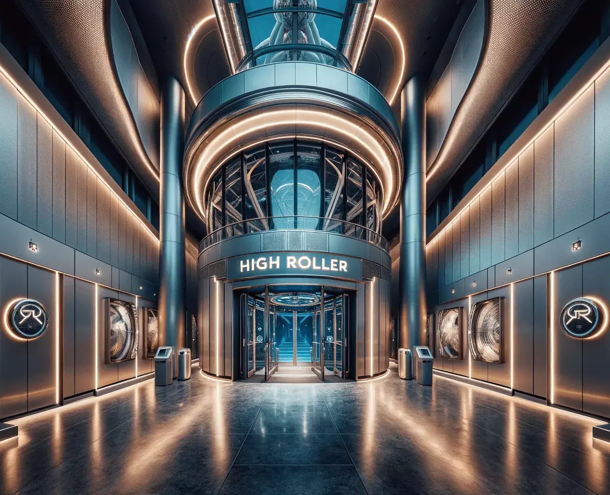
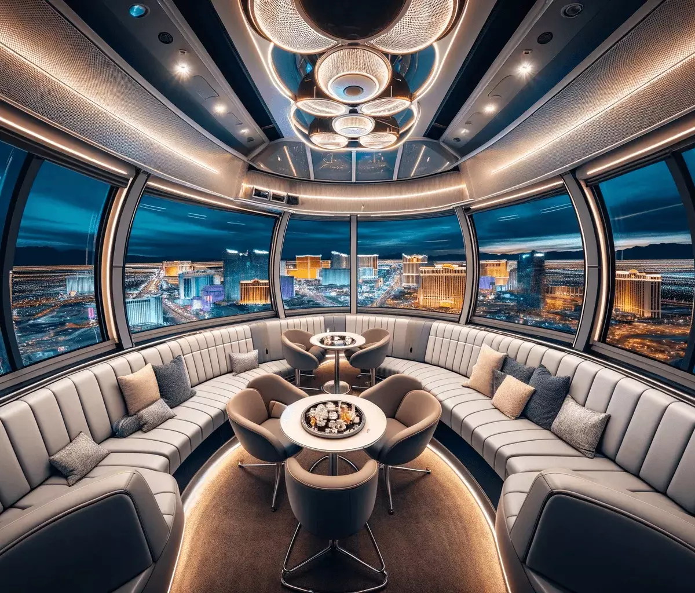
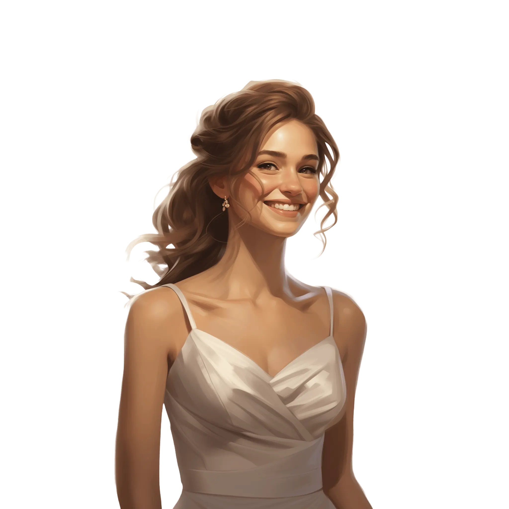
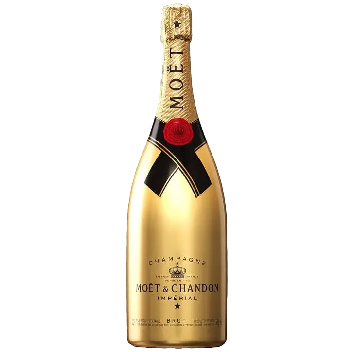
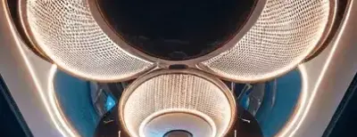
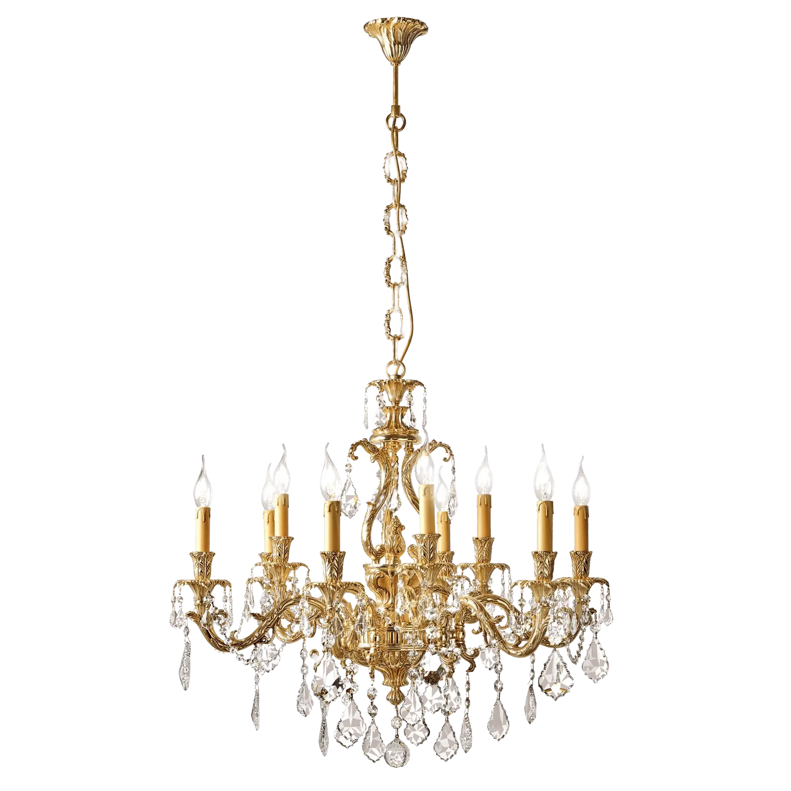

Alex prøver å finne et rom hvor han kan skifte dress.
Han vil se sitt aller beste ut for daten.
Etter å ha skiftet går Alex igjennom dørene for å nå vognen hun sitter i..
Han vil se sitt aller beste ut for daten.
Etter å ha skiftet går Alex igjennom dørene for å nå vognen hun sitter i..

Alright!
Jeg har møtt verdens vakreste kvinne!
Jeg har invitert henne på en date i pariserhjulet “High Roller”
Etter en fantastisk dag
er Alex i ekstase og spør om hun vil oppdage
Las Vegas med ham.
Til hans store overaskelse sier hun ja og de løper av sted sammen!




er Alex i ekstase og spør om hun vil oppdage
Las Vegas med ham.
Til hans store overaskelse sier hun ja og de løper av sted sammen!
Alright!
Jeg er så glad for at du sa ja!
Jeg vet om flere steder jeg gjerne vil ta deg med!
Dette blir en aften man sent vil glemme!